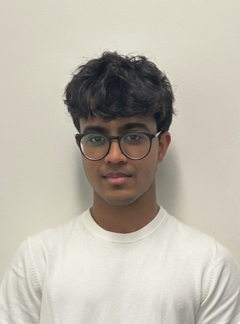

I build applied ML systems and the infrastructure under them: agent evals, storage engines, network transports, and API gateways that have to survive outside notebooks.

I'm from Mumbai, studying CS at UC San Diego ('28) with minors in cognitive science and business economics. Right now my week splits between Mountain View and San Diego: GTM engineering at GMI Cloud, and bioacoustics ML research with Engineers for Exploration at the Qualcomm Institute. I like to build, break, and ship fast, mostly at the intersection of startups, medtech, and applied AI.
I like owning a system end to end: the eval harness and the agent on top of it, the storage engine and the service that stresses it, the model and the deploy path that puts it in front of people. House rule for everything I build: publish the number, and publish what the number cost. Every benchmark on this page states its losing axis, because a result you can't interrogate is marketing, not engineering.
A lot of that starts at hackathons: five of the projects on this page were built in a weekend or less. Pylon has since landed in the Bow Capital incubator, and GMI Cloud published my model-cascade benchmark. Off the keyboard: poker, 8-ball, F1 weekends, Lego builds, soccer, and too much sci-fi.
Orchestration frameworks, eval harnesses, and self-correcting agents, measured on accuracy, cost, and latency, not vibes.
Vision and audio pipelines for messy real-world data: medical imagery, bioacoustics, RF signals, geospatial rasters.
Storage engines, transports, and gateways in C++ and Go, benchmarked head-to-head, with the losing axes published, not hidden.
Built Mint, an internal lead-intelligence platform that turns event guest lists into evidence-backed, reviewable sales leads, and designed the verify-then-escalate model cascade benchmark GMI Cloud published.
Worked across the ML core, LLM agent layer, and backend of a medical wound-imaging pipeline: MedSAM2 segmentation, clinical-documentation agents, and the persistence and deploy path behind a 3D viewer.
Build ingestion and indexing pipelines for multi-terabyte bioacoustic datasets and study focal-to-soundscape domain shift for bird-call classifiers.
Previously: Research Engineer, Computer Vision (Oct 2025 – Jan 2026): boundary-aware evaluation for mangrove canopy segmentation, exposing errors standard IoU masked.
Built an LLM task-orchestration framework powering a VS Code chat extension, plus an end-to-end-encrypted proxy routing LLM and third-party API requests with server-side credit accounting.
Every number below traces to a committed benchmark, test run, or published result, losing axes included.
A leveled LSM-tree key-value store from scratch: checksummed WAL, MVCC snapshots, Bloom-filtered SSTables, group commit. Durability verified by a harness that tears writes and SIGKILLs the engine mid-flight; the same matrix gates every push in CI.
Transport library for small messages on lossy links: SACK-based ARQ, adaptive RTO, SWIM failure detection on a lock-free epoll loop. Trades bulk throughput for tail latency, and publishes the losing axis (kernel TCP wins clean-link throughput ~27×).
Built on taut: a coordinator-less delivery service replicating a write-ahead log by majority commit under epoch-fenced leases, with no ZooKeeper and no etcd. Building it surfaced two SWIM protocol bugs, fixed upstream. A chaos suite gates every PR.
Lets a team share one LLM provider key safely: personal revocable keys with rate budgets, the real credential injected server-side. Atomic Redis rate limits hold a global ceiling across replicas where per-replica limiters admit 3× the limit.
Two-stage routing (Opus 4.8 primary, GLM 5.2 FP8 rescue on verifier failure) over 100 frozen EvalPlus tasks, ranked by $/solved-task. Beat every single-model baseline; the gain traced to complementary failure modes, not a uniformly better model.
End-to-end lead intelligence at GMI Cloud: identity resolution across Apollo and Exa evidence chains, LLM ICP tiering with human-review gates and audit trails, and a 16-tool conversational agent over the lead database.
Voice-first compression on two orthogonal axes: token-space (LLMLingua + self-implemented AttentionRAG behind an order-preserving merge) and model-space (~4-bit TurboQuant KV cache + LCLM latent compression), so the savings multiply.
Built at the Bow Capital Defense Hackathon (UCSD), now part of the Bow Capital incubator. Anomaly-based RF detection over dual SDR backends, a UDP gossip mesh, and a 3D operator dashboard in Next.js + deck.gl.
Built at the Loop Engineering Hackathon: detects, diagnoses, and remediates production incidents end-to-end while holding zero standing credentials: single-use, scope-bound grants behind a Pomerium identity-aware proxy, with policy-denied escalation and a full audit trail.
Search-and-rescue ops: LLM agents profile the missing person, a Monte Carlo engine turns hypotheses into a live probability heatmap and team assignments, and the coordinator drives it all hands-free by voice.
Prefer paper? Everything above, compressed to a page. Download the PDF ↗
Open to new opportunities: internships, research collabs, hackathons, and ambitious teams. Fastest way to reach me is email.
lakshgoyal06@gmail.com →